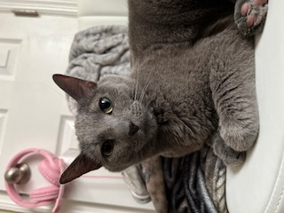
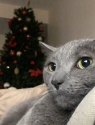
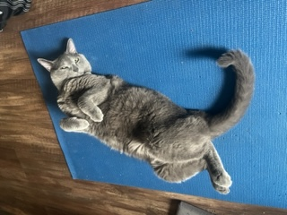
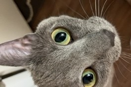
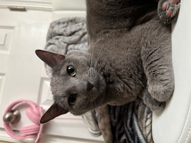
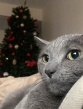
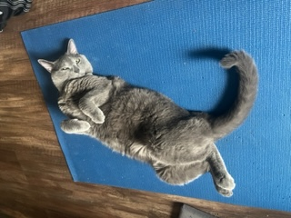
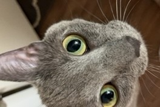

I am new to tech. I found interest in early 2023 after deciding I wanted a career change and started by teaching myself HTML, CSS, and Javascript. Before I began this journey, my career was focused on my life as a musician. I was playing in orchestras and ensembles around Central Kentucky, teaching private lessons, and I was the general music instructor at an elementary school for three years.


Once I made the decision to start exploring my other interests, I thought that the best way to find what I really enjoyed was to just learn as much I could about anything that interested me. I got a Master's degree in psychology, sought new jobs that would offer me unique experiences and help me develop some skills outside of music, and further explored some of my old hobbies like baking, playing video games, weight-lifting, and crocheting. Then I dove into coding.
I love it! Learning to code has been a refreshing challenge, and the most exciting aspect of it is that it never stops changing. I will never know everything there is to know about programming, so it is an endless source of entertaiment for my restless mind constantly craving new puzzles to solve. I still enjoy all of my hobbies and frequently perform with orchestras and other ensembles whenever I get the chance, but now I feel I can have a career which provides fulfillment in a new way.
 






